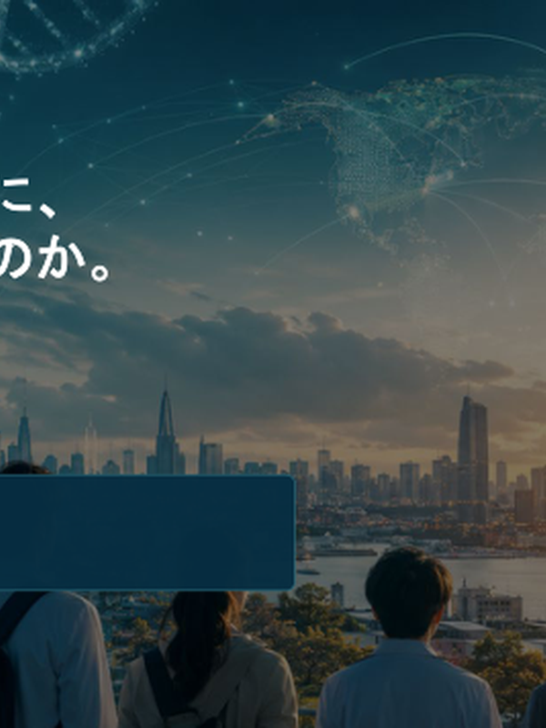
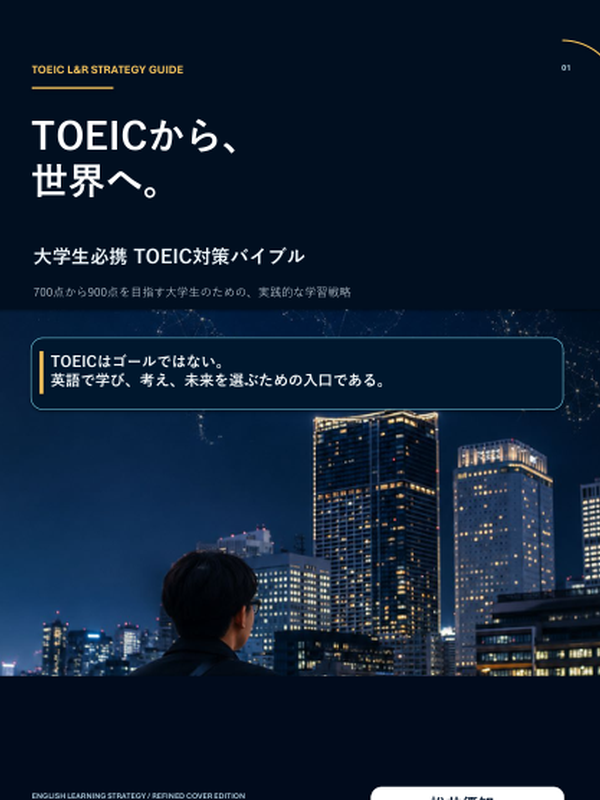
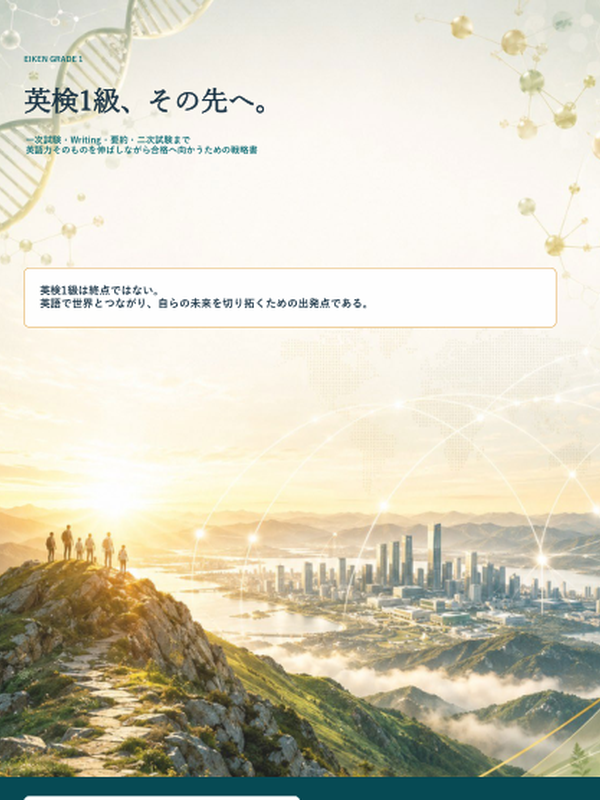
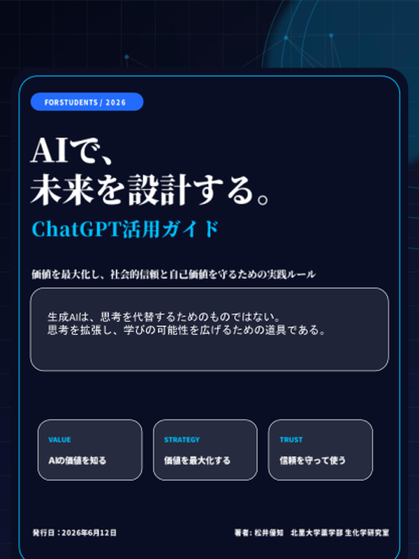
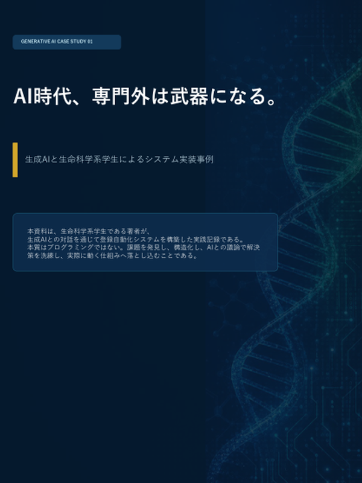
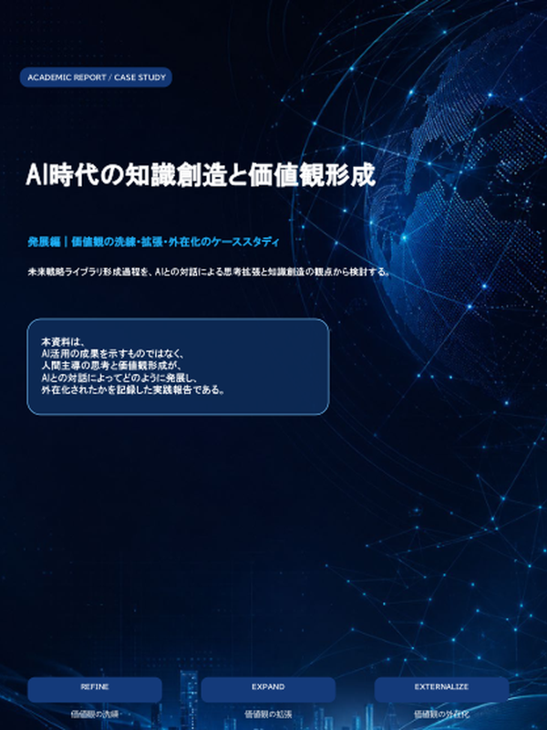
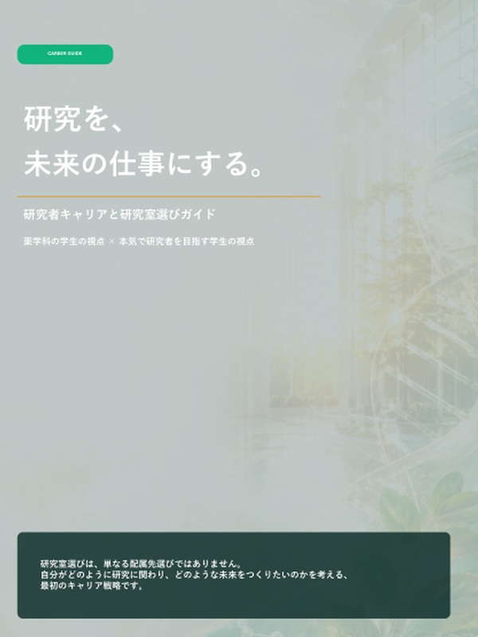

PHARMACY STUDENTS’ RESOURCE LIBRARY
知ることが、 未来を変える。
北里大学薬学部生のための学生目線の資料ライブラリ。
試験対策から英語学習、AI活用、研究室選び、大学院進学まで。 学生が自分の意思で学び、考え、未来の選択肢を広げるための資料をまとめています。
TOEIC・英検
薬学部の学習戦略
AI活用
研究室選び
登録無料・大学アカウント必須・無断共有禁止
大学アカウント必須
登録無料
学生向け資料
QUESTIONS THAT OPEN THE FUTURE
こんなこと、考えたことはありませんか？
試験、英語、AI、研究室選び。学生の現実的な関心から入り、 その先にある研究・進路・キャリアの選択肢へ接続します。
English
TOEIC・英検・英会話
Pharmacy
学習と試験対策
Research
研究室選び
AI
思考を拡張する
Career
学びを未来へ
START GUIDE
登録までの流れ
大学アカウントでフォームを開き、利用ルールを確認したうえで資料へアクセスできます。
- 1 大学アカウントでフォームを開く
- 2 利用ルールを確認
- 3 登録後、資料にアクセス
未知を学びに変える
未来を、自分の手で設計する
VALUE
こんなこと、考えたことはありませんか？
入口は、今困っていること。 その先にある可能性に気づくための資料をまとめています。
学生生活の中で起こりやすい問い
- TOEICや英会話を伸ばしたい
- 効率的な勉強法を知りたい
- 薬学部で何を頑張ればよいか分からない
- 研究室選びで失敗したくない
- AIを学習に活用したい
- 将来の進路に悩んでいる
ライブラリで学べること
無料で資料にアクセスするABOUT
未来の選択肢を広げる、学生目線の資料ライブラリ。
未来戦略ライブラリは、北里大学薬学部生が、学習・英語・AI活用・研究室選択・大学院進学について、 自分で考え、行動するための資料集です。
単に知識を渡すのではなく、 「なぜ学ぶのか」「どう選ぶのか」「次に何をするのか」を考えるための 選択肢と判断軸を届けます。
学びを支える
試験対策や学部学習を、短期的な暗記で終わらせず、本質的理解へつなげます。
選択肢を広げる
英語、AI、研究室選択、大学院進学を、将来の可能性として整理します。
自律を支援する
特定の正解を押し付けず、自分で考え、選ぶための判断軸を届けます。
CURRENT STATUS
未来の選択肢を広げるために。
未来戦略ライブラリは、学生が学びや進路を考えるきっかけとなる資料を継続的に整備しています。 現在の活動状況を紹介します。
設立
学生目線の学習・キャリア支援資料として運営を開始しました。
利用登録者
北里大学薬学部生を中心に登録制で運営しています。
2026年6月現在オリジナル資料
英語・AI・学習・研究室選択・進路形成に関する独自資料を整備しています。
PROJECT TIMELINE
小さく始め、丁寧に更新し、信頼される基盤へ。
未来戦略ライブラリとCOMPASSの歩みを、簡潔に紹介します。
活動開始
学生向け資料共有活動として、運営母体の原型となる取り組みを開始。
公式サイトリリース
登録導線、活動説明、資料ギャラリーを整理し、公式サイトとして公開。
未来戦略ライブラリ運営中
英語、AI、学習、研究室選択、進路形成を横断的に拡充。
運営母体 学生支援団体COMPASS始動
学習支援と教育活動を担う学生コミュニティとして、運営基盤の拡張を進めます。
CONTENTS
学習から未来設計まで、目的別に使える資料を公開しています。
個別の資料を並べるだけでなく、学部学習・英語・AI・研究室選択・キャリア形成を、 「未来の選択肢を広げる」という一つの導線として整理しています。
薬学部の学習戦略・試験対策
大学の講義試験や学部学習を、本質的理解につなげるための資料。 試験前に使える実利を入口に、将来の専門学習にもつながる学習支援を目指します。
英語学習・TOEIC・英検1級
TOEICや英検を単なる資格で終わらせず、専門性を世界とつなぐ入口として活用する学習資料。 英会話習得や実用英語への接続も扱います。
AI活用・知識創造
AIを単なる作業効率化ではなく、より深く考え、 より良い成果に責任を持つためのパートナーとして活用するガイド。
研究室選択・大学院進学・キャリア形成
研究室選び、大学院進学、研究職、製薬企業、国際的キャリアなどを考えるための判断軸を提供します。
MATERIALS
公開資料ギャラリー
英語学習、AI活用、研究室選択、キャリア形成まで。 未来戦略ライブラリでは、目的別に使えるオリジナル資料を公開しています。

English / Introduction
翻訳できる時代に、なぜ英語を学ぶのか。
AI時代に、英語学習の意味を問い直すための導入資料。
登録後に閲覧可能
TOEIC Strategy
TOEICから、世界へ。
TOEICを英語学習の入口として、実用英語へ接続する戦略書。
登録後に閲覧可能
EIKEN Grade 1
英検1級、その先へ。
合格の先にある実用英語へつなげるための学習戦略。
登録後に閲覧可能
AI Literacy
AIで、未来を設計する。
価値を最大化し、社会的信頼と自己価値を守るためのChatGPT活用ガイド。
登録後に閲覧可能
AI Implementation
AI時代、専門外は武器になる。
生成AIとGoogle Apps Scriptによる登録自動化システムの実装事例。
登録後に閲覧可能
AI & Knowledge Creation
AI時代の知識創造と価値観形成
AIとの対話による思考拡張、理念形成、価値観の外在化を扱う実践報告。
登録後に閲覧可能
Research Career
研究を、未来の仕事にする。
研究者キャリアと研究室選びの判断軸を示すガイド。
登録後に閲覧可能WHY THIS LIBRARY
重要な選択ほど、早く知ることで未来が変わる。
大学生活には、英語学習、AI活用、研究室選択、大学院進学、就職活動など、 多くの重要な意思決定があります。 しかし、それらの情報は必ずしも体系的に整理されて学生へ届いているわけではありません。
未来戦略ライブラリは、断片的な情報を、将来像と結びついた判断軸として整理し、 学生が自分の意思で選択できる状態を支援します。
早い段階で選択肢に気づくことが、数年後の学習行動と進路を変える。
REGISTRATION & INQUIRY
利用登録・ご相談はGoogleフォームから受け付けています。
未来戦略ライブラリは、現在、北里大学薬学部生を対象とした登録制で運営しています。 利用登録には、大学アカウントでのログインが必要です。
Googleフォームから登録内容を送信すると、Google Apps Scriptによる自動処理で、 案内メール送信や共有設定が進みます。 スムーズに資料へアクセスできるよう、運営基盤を整えています。
大学アカウントからのみアクセスできます。
個人用Gmailなどではフォームを開けない場合があります。
対象者確認と安全な運営のため、大学アカウントでの登録をお願いしています。
Googleフォームを開いて無料登録する
登録制は、資料の安全な運用、著作権保護、無断転載防止、利用者への適切な案内のために設けています。
Step 1
大学アカウントでフォームへアクセス
利用登録には、大学アカウントでのログインが必要です。
Step 2
必要事項と利用ルールを確認
氏名・連絡先・利用規約への同意など、必要事項を入力します。
Step 3
自動処理で登録
Apps Scriptが案内メール送信や共有設定を進めます。
Step 4
資料にアクセス
目的に応じて、学習・英語・AI・進路資料を利用できます。
For Faculty / Partners
教育活動・講演等のご相談
学内関係者による教育支援、講演、学習支援活動への協力相談も、 同じGoogleフォームから受け付けています。
SAFETY & RULES
安心して使える資料ライブラリであるために。
本ライブラリでは、資料の品質だけでなく、利用者が安心して活用できる仕組みを重視しています。
オリジナル資料を中心に公開
掲載資料の多くは、運営者が独自に作成したオリジナルコンテンツです。
無断共有・再配布を禁止
資料の第三者への無断共有、再配布、転載、改変、商用利用は禁止しています。
大学アカウントによる登録
対象者確認と安全な運営のため、大学アカウントでの登録をお願いしています。
中立性を重視
特定の進路、資格、研究室、AIサービスを過度に推奨しません。
公式情報との照合を推奨
試験、履修、進路などの重要情報は、必ず大学公式情報と照合してください。
COLLABORATION
教育活動への協力について
未来戦略ライブラリでは、学生向けの学習支援を主軸としながら、 学内での教育活動、英語学習支援、AI活用に関する講演・説明会などのご相談も受け付けています。
教育支援活動や学内での学習企画に関心を持っていただいた場合は、 Googleフォームよりお気軽にご連絡ください。
START HERE
知ることが、未来を変える。
未来戦略ライブラリは、北里大学薬学部生の学習と進路選択を支えるための資料集です。 必要な資料にアクセスし、自分の未来を考えるきっかけとして活用してください。
Googleフォームを開いて無料登録する